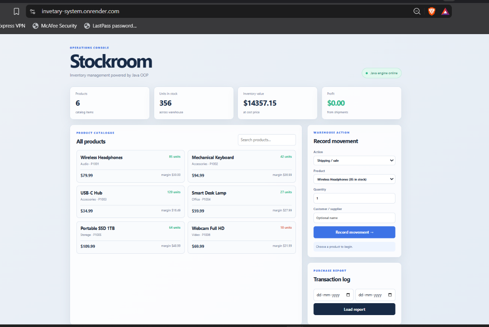
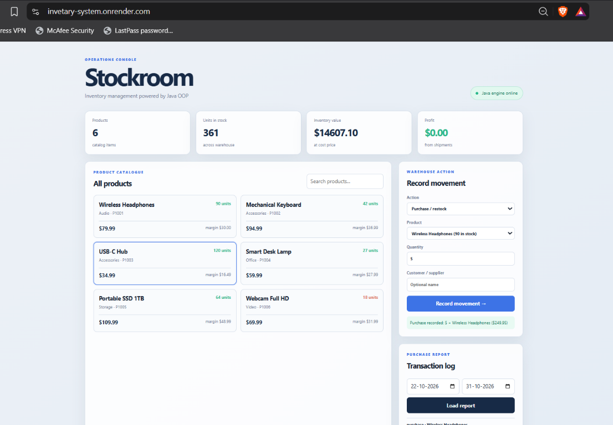

A Java-based web application for product catalogue management,
stock movement, financial calculation and transaction reporting
| Siddhi Dherange | 25 |
| Jayati Hembade | 18 |
| Akram Kadri | 21 |
This is to certify that the project report entitled
“Inventory Management System”
This project has been developed and submitted as a mini project for the Object-Oriented Programming subject. The project demonstrates the application of Java classes, objects, encapsulation, collections, HTTP communication and web application development to solve an inventory management problem.
The work has been carried out by the following students:
| Siddhi Dherange | 25 |
| Jayati Hembade | 18 |
| Akram Kadri | 21 |
We hereby declare that the project entitled “Inventory Management System” is our original work developed for the Object-Oriented Programming mini project. The system has been implemented using Java as the primary programming language, with a browser-based frontend and Docker-based deployment configuration.
All design, implementation, testing and documentation work described in this report relates to the project developed by our group. External libraries, platform documentation and development tools used during the work are acknowledged in the references section.
We express our sincere gratitude to our subject teacher and department for providing us with the opportunity to develop this Object-Oriented Programming mini project. The project helped us understand how Java concepts can be applied to a practical business problem.
We are thankful for the guidance and academic support received throughout the planning, implementation, testing and deployment stages. We also acknowledge the use of Java development tools, browser technologies, Docker and Render for building and presenting the system.
Finally, we thank all group members for their cooperation in designing the interface, implementing the Java backend, testing inventory operations and preparing the final project demonstration.
Inventory Management System is a web-based application developed to manage products and warehouse stock through a simple interactive dashboard. The application implements the operations specified in the mini project problem statement: listing products, displaying product information, purchasing or restocking, shipping or selling, balancing stock, calculating inventory value and profit, and generating purchase and transaction reports for a selected date range.
The main application logic is implemented in Java using object-oriented programming. The system contains separate classes for products, transactions, inventory operations and HTTP server responsibilities. A Java HTTP server exposes JSON endpoints that are consumed by a responsive HTML, CSS and JavaScript frontend. The application validates quantities, prevents shipping beyond available stock, updates stock after every movement and records transactions for reporting.
The project is packaged for deployment using Docker. A multi-stage Dockerfile compiles the Java source with a Java Development Kit and runs the compiled application in a Java Runtime Environment. The deployment configuration is compatible with Render and includes a health-check endpoint.
| 1. Introduction | 1 |
| 2. Problem Definition and Objectives | 2 |
| 3. System Analysis and Requirements | 3 |
| 4. System Design | 5 |
| 5. Object-Oriented Implementation | 7 |
| 6. Functional Modules | 10 |
| 7. Web Interface and API | 14 |
| 8. Deployment and Testing | 17 |
| 9. Results and Screenshots | 19 |
| 10. Conclusion and Future Scope | 21 |
| References | 23 |
Inventory is the collection of products maintained by an organization for sale or operational use. Accurate stock information is important because an organization must know what products are available, how many units are present, when stock is moving, and whether the activity is generating profit.
Manual inventory recording can lead to incorrect quantities, delayed updates and difficulty in preparing reports. The Inventory Management System developed in this project provides a digital interface for managing product information and stock movement. It combines a Java object-oriented backend with a web frontend so that inventory operations can be performed through a browser.
The project is based on the Group C mini project requirement for an inventory management system. It has been designed as an educational application, with the main focus on Java OOP concepts, clear business rules and interactive presentation.
In a basic manual system, product information and stock changes may be written in registers or maintained in separate files. Such a system makes it difficult to calculate current stock and profit immediately. It also makes it difficult to produce a date-wise movement report.
The proposed system centralizes product and transaction information in a Java inventory object. Every purchase increases stock, every shipment decreases stock after validation, and every movement is recorded. The dashboard calculates important values from the current application state and presents them through a browser.
To design and implement an inventory management system using maximum practical features of Object-Oriented Programming in Java. The system should support product listing, individual product information, purchase, shipping, stock balance, loss and profit calculation, and purchase reporting between selected dates.
The project connects classroom concepts with a practical business workflow. It demonstrates that OOP is not limited to isolated examples: classes can model products, transactions and business services, while methods can protect and modify the state according to defined rules.
| Requirement | Description |
|---|---|
| Product listing | Display all products with ID, name, category, available stock, selling price and margin. |
| Product information | Show individual product information in the catalogue cards and product selector. |
| Purchase | Add purchased quantity to available stock and record the purchase amount at cost price. |
| Shipping | Subtract shipped quantity only when sufficient stock is available and record sale amount at selling price. |
| Stock balance | Display total units and current stock for each product. |
| Financial calculation | Calculate inventory value, revenue, cost of shipped goods and profit. |
| Report | Display purchase and shipping transactions filtered by start and end dates. |
| Deployment health | Provide an endpoint that confirms the Java server is running. |
| Category | Requirement |
|---|---|
| Development system | Any modern Windows, Linux or macOS computer. |
| Language | Java 17 or newer. |
| Frontend | Modern web browser with JavaScript enabled. |
| Deployment | Docker-compatible cloud service such as Render. |
| Source control | Git and GitHub. |
The system follows a simple three-layer arrangement. The presentation layer contains the browser interface. The server layer receives requests and returns JSON. The domain layer contains the Java classes that maintain products, transactions and inventory calculations.
| Class | Responsibility |
|---|---|
| InventoryServer | Starts the server, seeds products, handles API requests, serves frontend files and returns JSON. |
| Product | Represents a product and stores its identity, category, stock and prices. |
| Transaction | Represents a purchase or shipping movement with quantity, amount and date. |
| Inventory | Owns the product catalogue and transaction history and performs business operations. |
The Product class encapsulates all information belonging to an inventory item. The fields are private, so the class controls access to its internal state. Product identity and pricing are initialized through the constructor. Stock is mutable because stock changes during purchases and shipping.
The Transaction class stores the type of movement, product, quantity, customer or supplier name, total amount and date. Creating a separate transaction object preserves an auditable history rather than only changing the current stock number.
The Inventory class is composed of Product and Transaction objects. This is an example of object composition: the Inventory object manages collections of related domain objects.
Validation is performed before stock is changed. Therefore an invalid operation produces an error and leaves the inventory state unchanged.
The system seeds six sample products: Wireless Headphones, Mechanical Keyboard, USB-C Hub, Smart Desk Lamp, Portable SSD 1TB and Webcam Full HD. Each item has a unique ID, category, stock quantity, cost price and selling price.
A purchase or restock increases product stock. The purchase total is calculated as quantity multiplied by cost price. The movement is stored as a Transaction with type purchase.
A shipping or sale operation decreases product stock. Before the change, the system checks that the available stock is greater than or equal to the requested quantity. The shipping total uses selling price and the movement is stored as type shipping.
The balance module displays the stock for each product and calculates the total units across the catalogue. Products below 25 units are identified as low-stock items.
Inventory value is calculated from the current stock multiplied by cost price. Revenue is the total of shipping transactions. The cost of goods sold is the quantity shipped multiplied by product cost price. Profit is revenue minus the cost of shipped goods.
The report module accepts optional start and end dates. It filters transactions whose dates fall within the inclusive range and sorts matching transactions by date before returning them to the interface.
The dashboard displays product count, units in stock, inventory value and profit as summary cards. The product catalogue provides search support and shows stock and margin values for every product.
The movement form lets a user select purchase or shipping, select a product, enter quantity and optionally enter a customer or supplier. After submission, the interface shows a confirmation or error notice and refreshes the current inventory values.
| Method | Endpoint | Purpose |
|---|---|---|
| GET | /api/inventory | Returns dashboard totals. |
| GET | /api/inventory?view=products | Returns the complete product catalogue. |
| GET | /api/inventory?view=report&from=DATE&to=DATE | Returns filtered transactions. |
| POST | /api/inventory | Processes purchase and shipping form data. |
| GET | /api/health | Returns the server health status for Render. |
The Java server returns JSON objects and arrays. JavaScript reads the responses with the Fetch API, updates the DOM and reloads the product list and dashboard after every successful movement. Product and report text is HTML-escaped before being inserted into the page.
The project uses a multi-stage Dockerfile. The build stage uses eclipse-temurin:17-jdk to compile Java source files. The runtime stage uses eclipse-temurin:17-jre, copies compiled classes and frontend files, and starts the Java server.
Render is configured to deploy the service as a Docker web service. The server reads the PORT variable provided by Render. No additional secret or environment variable is required for the current in-memory implementation.
| Test case | Expected result | Status |
|---|---|---|
| Compile Java source | Classes are generated successfully. | Passed |
| List products | Six seeded products are returned. | Passed |
| Purchase five units | Stock increases and transaction is recorded. | Passed |
| Ship two units | Stock decreases and transaction is recorded. | Passed |
| Ship more than available stock | Operation is rejected without changing stock. | Passed |
| Generate report | Transactions are returned for selected dates. | Passed |
| Health endpoint | Server returns HTTP 200 and status OK. | Passed |
| Homepage | Dashboard is served successfully. | Passed |
The deployed application provides a functional inventory dashboard. The first screenshot shows the initial catalogue and stock values. The second screenshot shows a purchase operation after five units have been added to Wireless Headphones, with updated stock and report date controls.


The Inventory Management System successfully implements the operations required in the mini project problem statement. It uses Java object-oriented design to model products, transactions and inventory responsibilities. The web interface makes the system easy to demonstrate, while the backend ensures that stock and financial calculations are performed consistently.
The project demonstrates how encapsulation, composition, collections, stream processing, validation and HTTP communication can be combined into a practical application. Docker deployment makes the Java project reproducible and suitable for hosting on Render.
The current version stores data in memory. Therefore, data returns to the seeded state when the server restarts. The current version also uses a simple product list and does not include user authentication or a persistent database.
https://github.com/Akram2903/INVETARY_SYSTEM